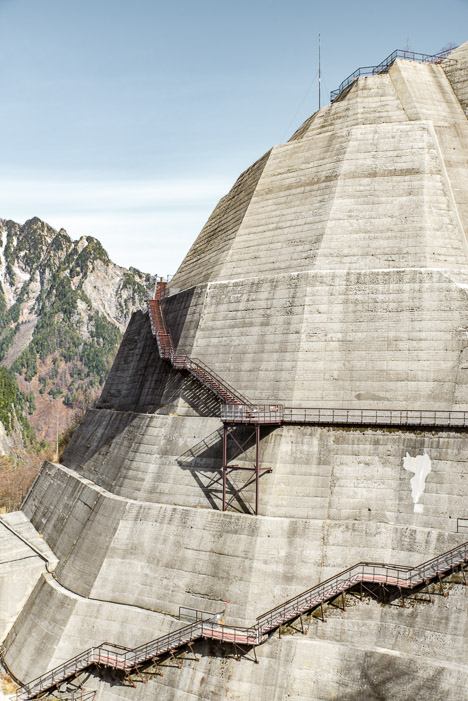
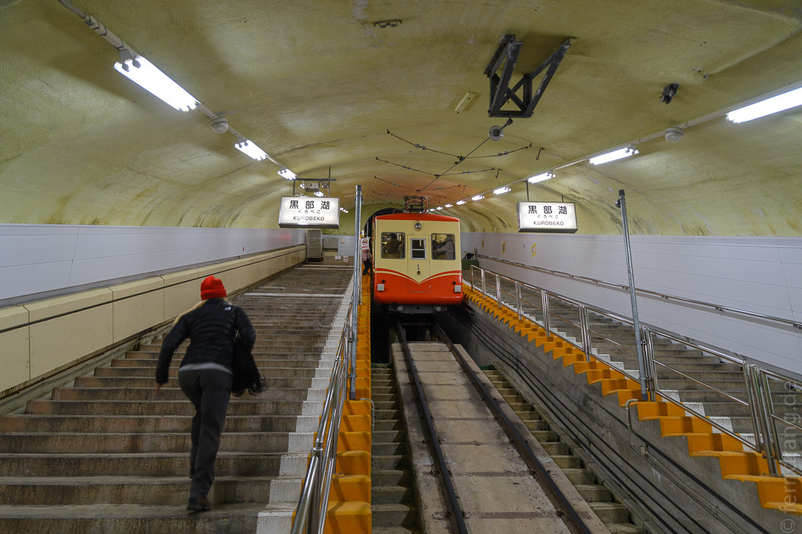
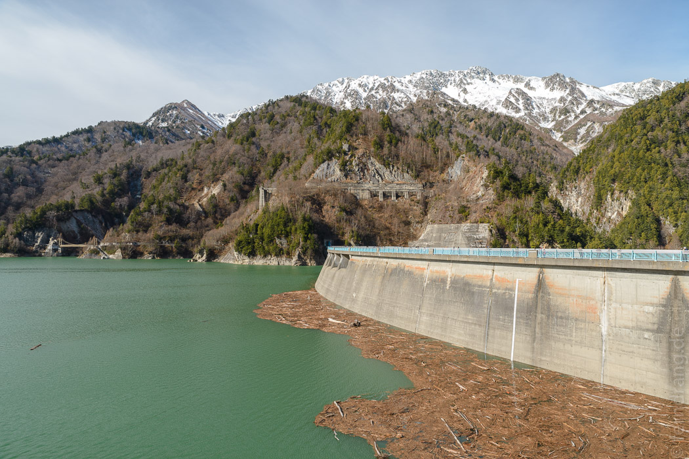
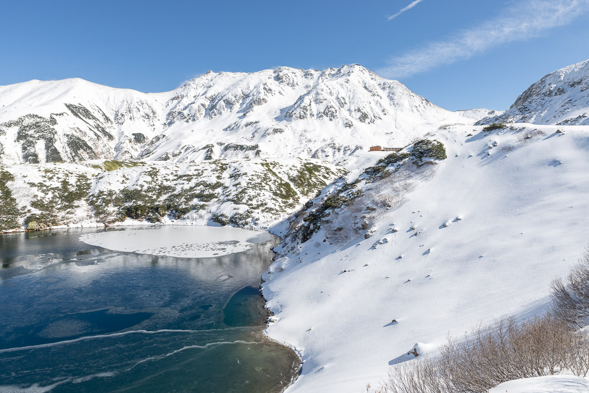
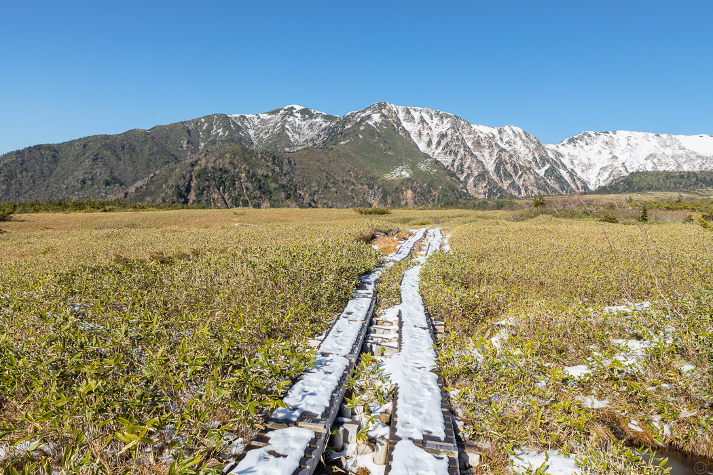

Dem Schnee sollten wir auf der Alpen-Route näher kommen als erwartet. Die Tour ist hauptsächlich ein Spaß für Rentner und Reisegruppen, aber eigentlich war es ganz lustig. Mit einem Kombiticket kann man sich im Laufe eines Tages auf einer perfekt beschilderten Route mit Seilbahnen, Gondeln und Bussen durch Tunnel, über einen Staudamm und viele Berge quer durch die Alpen bewegen. Wir hatten tolles Wetter und der Sonnenschein hat die Kälte etwas abgemildert.
  Auf dem höchsten Punkt um die 2500m sind wir am Ende eines Tunnels plötzlich mitten im Schnee ausgespuckt worden. Die chinesischen Alten haben sich mit dem Alpen-Routen-Maskottchen, einer Plüschwildente, ablichten lassen und wir haben gefroren und gestaunt.
Eine Station mit dem Bus weiter konnten wir einen schönen Spaziergang durch ein verschneites Hochmoor machen - ganz friedlich und allein wohlgemerkt, denn die Gruppen entfernen sich nie zu weit vom Bus.
Der Trip endete im milden Toyama in Küstennähe, wo die Berge nur noch am Horizont zu sehen waren.